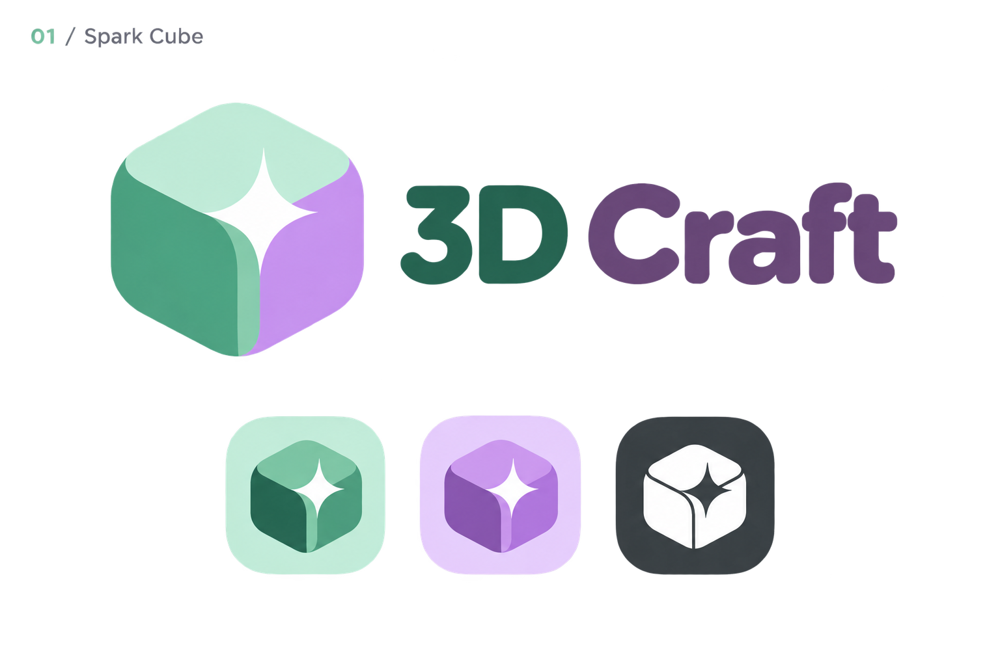
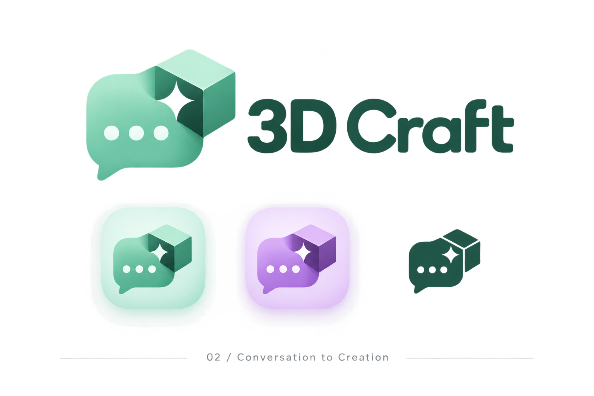
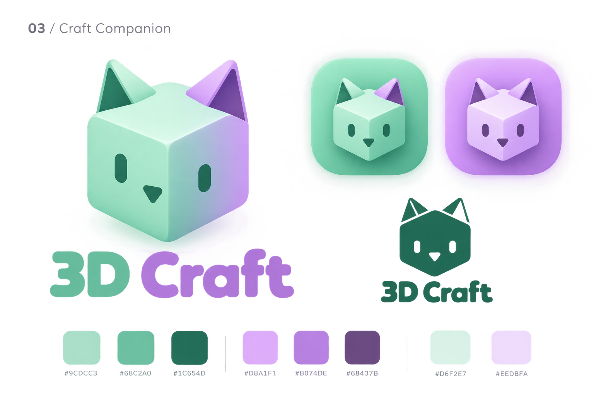

Spark Cube RecommendedA simple cube and spark: clear at app-icon size, with room for characters, worlds, and objects.Download original PNG
Conversation to Creation A conversation bubble becomes a cube, expressing the chat-to-concept-to-3D workflow.Download original PNG
Craft Companion A friendly cube-shaped cat gives the studio a playful, recognizable mascot.Download original PNG